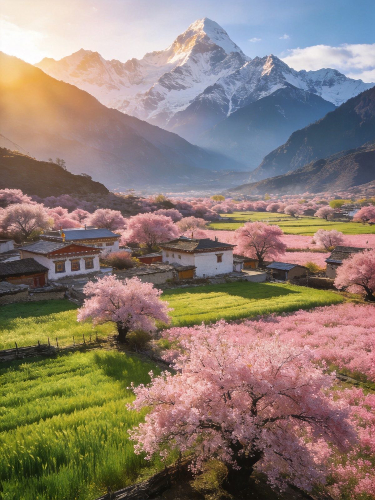
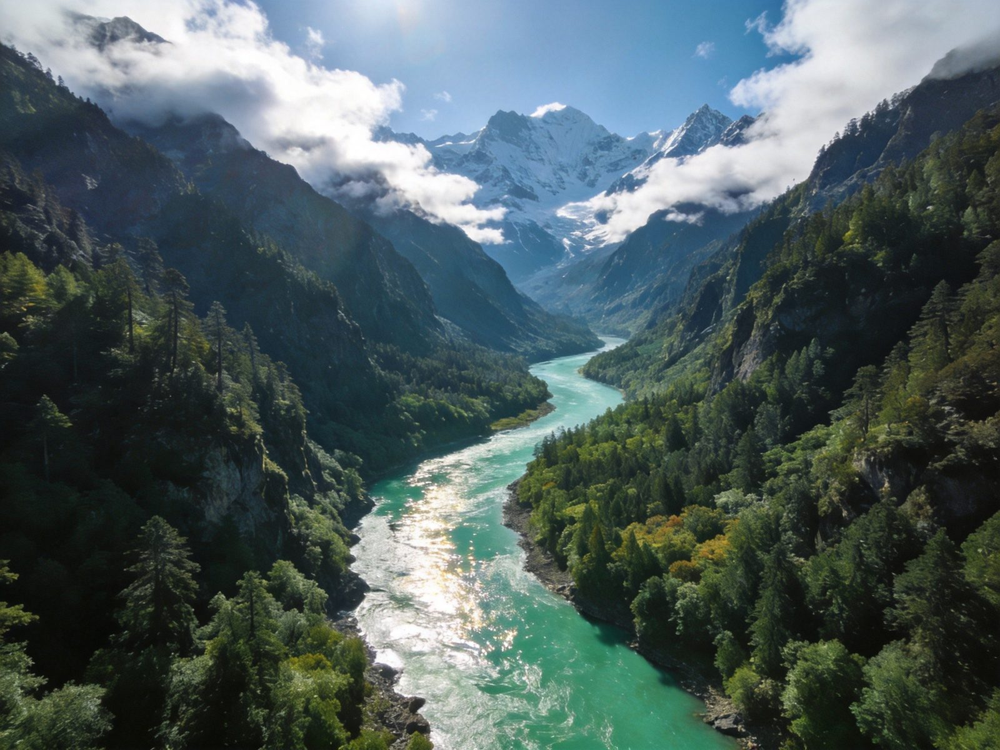
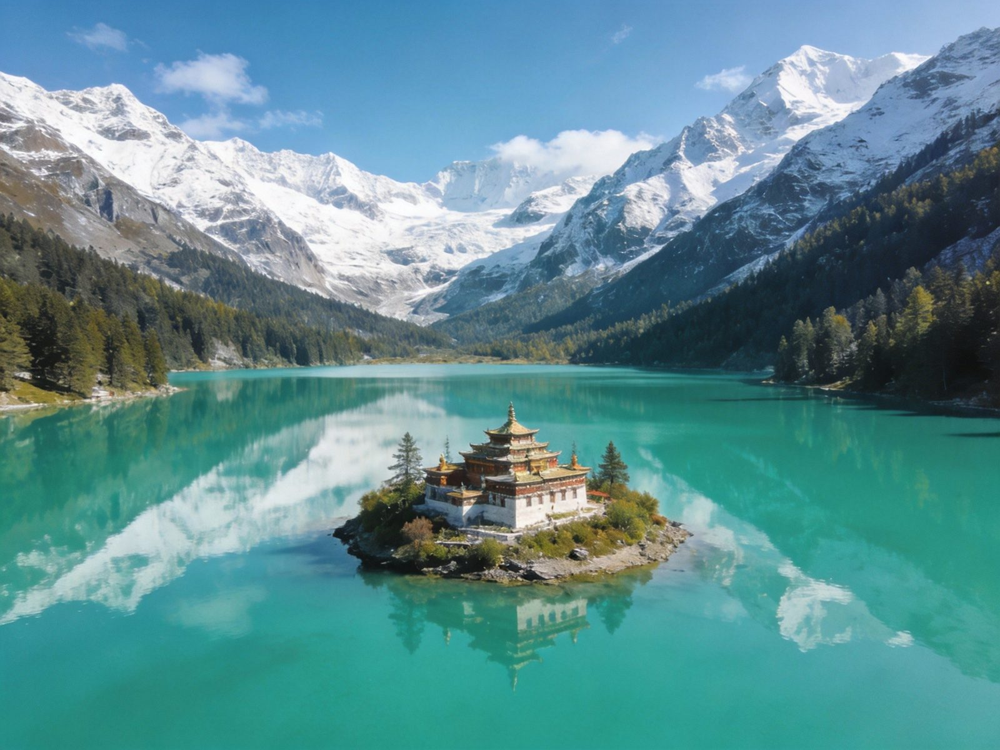

春天限定
桃花季 · 雪山下的粉色风暴
3月中旬至4月中旬是林芝桃花季盛放期，野生桃树（部分超600年）在雪山下灿若云霞。主会场嘎拉桃花村（30元）、中国最大波密桃花谷（绵延30公里）、索松村（桃花+雪山+峡谷三合一），出片率全场最高。
👍 必看理由：桃花+雪山同框是林芝名场面；盛花期多在 3 月下旬—4 月上旬，行前查攻略别错过。
西藏海拔最低的"江南"（约 3000m），比拉萨低 1000 多米、含氧量更高，首次进藏友好。春天桃花漫山、盛夏 20℃ 避暑、10 月看南迦巴瓦日照金山。核心：雅鲁藏布大峡谷（门票150+观光车90）、巴松措（120+观光车50）、索松村直面南迦巴瓦、鲁朗石锅鸡。米林机场、拉林高铁直达。门票交通住宿预算避坑一篇讲清。
一天串起巴松措与雅鲁藏布大峡谷两大招牌，海拔友好、节奏轻快。
第一天下峡谷住索松村，第二天翻色季拉山走鲁朗，把"雪山+桃花+牧场"一次看够。
把林芝最有辨识度的 5 个点单独拎出来说清楚——看什么、为什么出名、怎么去。

3月中旬至4月中旬是林芝桃花季盛放期，野生桃树（部分超600年）在雪山下灿若云霞。主会场嘎拉桃花村（30元）、中国最大波密桃花谷（绵延30公里）、索松村（桃花+雪山+峡谷三合一），出片率全场最高。
👍 必看理由：桃花+雪山同框是林芝名场面；盛花期多在 3 月下旬—4 月上旬，行前查攻略别错过。

世界最大最深的峡谷（垂直落差逾6000米），南迦巴瓦在这里绕出一个"U"形大拐弯。官方观光车 9:00–17:00，全程约3–4小时，索松村与直白村是看南迦巴瓦的最佳机位。
👍 门票：旺季150元/淡季75元 + 观光车90元，3日有效；住索松村可免大峡谷门票，需边防证。

海拔3480米的翡翠色圣湖，藏语意为"三座岩山环绕的圣湖"，是宁玛派圣地。湖心岛的错宗工巴寺有1500年历史，经木桥可达；游船（约160元）从湖面眺望雪山蓝湖最推荐。
👍 门票：旺季120元/淡季60元 + 观光车50元；5A 与"小瑞士"双重身份，第一次来林芝必去。
海拔7782米、喜马拉雅东端最高峰，藏语意为"直刺天空的长矛"，被称"害羞姑娘"——云十有八九遮住峰尖。最佳观看：色季拉山口（4728m）、索松村、大峡谷观景台。日落金山最壮观。
👍 运气预警：10 月可见率全年最高；看得到算"极幸运"，做好云里守山的心理准备。
被称为"雪域的瑞士"，130公顷高山牧场，牦牛骏马悠闲吃草。观景台约30–60元；镇上是鲁朗石锅鸡发源地——墨脱石锅炖藏鸡，鸡汤鲜美滚烫，藏区一绝。
👍 顺路加分：翻色季拉山必经鲁朗，停车吃顿石锅鸡，给雪山牧场之旅回血。
林芝海拔低、交通先进，进藏第一站选这里能大幅降低高反概率。
| 方式 | ✈️ 飞机 | 🚄 高铁 | 🚗 自驾 |
|---|---|---|---|
| 时长/成本 | 米林机场（LZY），成都飞约1.5–2h | 拉林铁路，拉萨→林芝约4小时 | 拉林高速 5–6h；G318/滇藏线进藏 |
| 适合人群 | ✔ 推荐：海拔最低最快进藏，高反友好 | 高原最美铁路，沿途风景如画 | 真正的自驾朝圣 / 老司机 |
| 注意 | 航班受天气影响较大，行前看天气预报 | 车次有限，暑期/桃花季早订 | 拉林高速限速，谨防落石与疲劳 |
| 💡 一句话建议：第一次进藏先飞林芝适应（比拉萨低1000多米），市内到景点多数包车/拼车衔接最省心；去大峡谷/索松村记得办边防证。 | |||
住林芝市区最方便，住索松村最出片，三档价位供参考。
不含往返大交通；区间为保守–宽松，实际以选择为准。
| 项目 | 1日精华版 | 2日深度版 |
|---|---|---|
| 市内包车/拼车（人均） | 约 150–300 | 约 300–600 |
| 巴松措（门票+观光车） | 约 120–170 | — |
| 雅鲁藏布大峡谷（150+90） | 约 240 | 约 240 |
| 鲁朗观景台+色季拉山 | — | 约 30–60 |
| 住宿 | —（当晚往返） | 1 晚 150–600 |
| 餐饮 | 约 80–140 | 约 160–280 |
| 合计 · 人均 | 约 590–850 | 约 880–1780 |